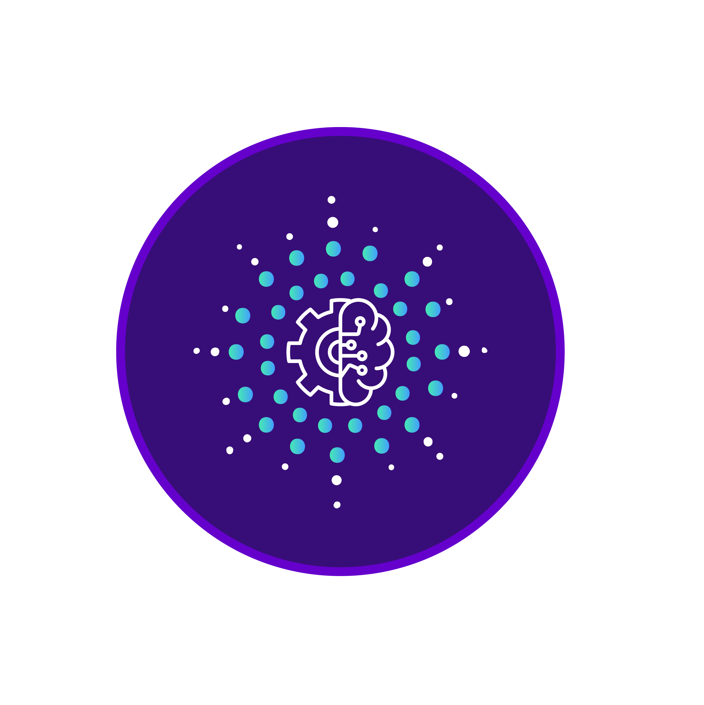
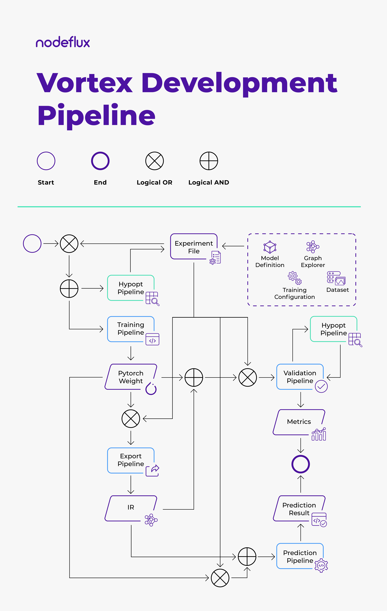

Vortex Documentation¶
A Deep Learning Model Development Framework for Computer Vision
Version : 0.2.1
Overview¶
Vortex (a.k.a Visual Cortex) is a computer deep learning framework based on Pytorch that provides end-to-end model development. It utilizes a single experiment file in YAML format (and an optional YAML file for hyperparameter optimization) to navigate all of the pipelines and provides complete development environment which consists of the following pipelines :

Additionally, it also support exporting Pytorch model into graph Intermediate Representation (IR) and utilize it on specific runtime by the following process :
Currently we support deep learning model development on computer vision of the following task:
- Image Classification
- Object Detection ( UNVERIFIED YET, MAY PRODUCE BAD RESULTS )
- Multiple Object Detection
- Single Object Detection with Landmarks
Highlights¶
- Easy CLI usage
- Modular design, reusable components
- Various architecture support
- 50 + infamous backbone networks
- Classification and Detection architecture support
- Integration with image augmentation library ( Albumentations )
- Integration with hyperparameter optimization library ( Optuna )
- Integration with 3rd party experiment logger ( Comet.ml )
- Graph export to Torchscript and ONNX
- Visual report of model's performance and resource usage, see this example
Installation¶
Vortex consists of 2 packages:
-
Vortex development package (
vortex.development)This package contain full vortex pipelines and main development features with all of it's dependencies
-
Vortex runtime package (
vortex.runtime)This package only contain minimal dependencies to run the exported vortex model (IR graph). There are two IR graph format supported by vortex, torchscript or onnx.
You could choose to install only minimal dependencies packages if you want to support only one of them, or you could also install all of them with extra dependency option: - all - torchscript
- onnxruntime
Vortex is tested and developed using Python3.6
Vortex Development¶
With Docker¶
Make sure you have installed nvidia-docker2 if you want to use your nvidia gpus, if you haven't follow this guide.
You pull the official image from our docker hub:
docker pull nodefluxio/vortex:latest
Or if you want to build your self:
docker build --target=development -t vortex:dev -f dockerfiles/vortex.dockerfile .
From Source¶
Install package dependencies:
apt update
apt install -y libsm6 libxext6 libxrender-dev ffmpeg \
x264 libx264-dev libsm6 git sqlite3 \
libsqlite3-dev graphviz pciutils
Make sure you have Python3.6 installed, or if you use Ubuntu 18.04 you can install them by:
apt install -y python3.6
or, you can download the Python 3.6 release here.
Then clone vortex repo to your local directory:
git clone https://github.com/nodefluxio/vortex.git
cd vortex
git checkout v0.2.0
You could choose either one of the following environment to install vortex:
Using pip¶
Make sure you have pip installed for your python executable, if not follow this guide.
It's important to be noted that vortex.development package also depends on vortex.runtime package, so you need to install both packages:
pip install ./src/runtime[all]
pip install ./src/development
Or if you want to install vortex with additional optuna visualization support:
pip install 'src/development[optuna_vis]'
To check whether the installation is succesful, you can run:
python3.6 -c 'import vortex.development'
python3.6 -c 'import vortex.runtime'
Using conda¶
Make sure you have conda installed, if not follow this guide.
Create new environment and activate it:
conda create --name vortex python=3.6
conda activate vortex
Install pytorch and the supporting package:
conda install -c pytorch -y pytorch=1.6 torchvision=0.7 cudatoolkit=10.2
Then you could install vortex with:
pip install ./src/runtime[all] ./src/development
Check the installation with:
python -c 'import vortex.development'
python -c 'import vortex.runtime'
Vortex Runtime¶
There three option for the runtime package installation to support either one of the IR graph runtime or to support both of them. The options are:
- onnxruntime
- torchscript
- all
With Docker¶
Make sure you have installed nvidia-docker2 if you want to use your nvidia gpus, if you haven't follow this guide.
You pull the official image from our docker hub for runtime:
docker pull nodefluxio/vortex:runtime-all-0.2.1
There are runtime image tags you can choose from the repository, all the tags that starts with runtime- is the image for vortex runtime. For example if you choose to get the image with onnxruntime support:
docker pull nodefluxio/vortex:runtime-onnxruntime-0.2.1
Or if you want to build your self:
docker build --target=runtime -t vortex:runtime -f dockerfiles/vortex.dockerfile .
You could also specify the extra dependency to support specific IR graph using the build argument RUNTIME_TYPE, for example with onnxruntime:
docker build --target=runtime --build-arg RUNTIME_TYPE=onnxruntime -t vortex:runtime-onnx -f dockerfiles/vortex.dockerfile .
From Source¶
Install package dependencies:
apt update
apt install -y libsm6 libxext6 libxrender-dev ffmpeg \
x264 libx264-dev libsm6 git sqlite3 \
libsqlite3-dev graphviz pciutils
Make sure you have Python3.6 installed, or if you use Ubuntu 18.04 you can install them by:
apt install -y python3.6
or, you can download the Python 3.6 release here.
Then clone vortex repo to your local directory:
git clone https://github.com/nodefluxio/vortex.git && cd vortex
git checkout v0.2.0
You could choose either one of the following environment to install vortex:
Using pip¶
Choose one dependency options that suits your need, for example if you want to install specific dependencies for onnxruntime:
pip install ./src/runtime[onnxruntime]
Or, if you want have support for all available runtime:
pip install ./src/runtime[all]
To check the installation, you can run:
python3.6 -c 'import vortex.runtime'
Using conda¶
Make sure you have conda installed, if not follow this guide.
Create new environment and activate it:
conda create --name vortex-rt python=3.6
conda activate vortex-rt
Install cudatoolkit package:
conda install -c pytorch -y cudatoolkit=10.2
Choose one of the dependency that suits your need, for example if you only want to support onnxruntime:
pip install ./src/runtime[onnxruntime]
Or, if you want to support all available runtime:
pip install ./src/runtime[all]
Check the installation with:
python -c 'import vortex.runtime'
Getting Started¶
Vortex utilizes a certain standard to allow seamless integration between pipelines. In this guide, we will show you how to integrate your dataset/use the built-in ones, how to build the experiment file, and how to utilize and propagate both items to all of Vortex pipelines.
Developing Vortex Model¶
-
The first step is dataset integration, it is recommended for you to check the built-in datasets section in order to find suitable setting for your dataset. For example, you can use torchvision's ImageFolder to integrate a classification dataset. However, if you didn't find any suitable internal integration, you can follow dataset integration section to make your own integration point
-
Next, we need to build the experiment file, please follow the experiment file configuration section
-
At this point, you should've already prepared your experiment file and your dataset. You can now run the training pipeline. See training pipeline section for further instructions.
-
After receiving Vortex model from training pipeline, you can either do :
- measure your model's performance using validation pipeline, or
- directly use the model in your script using prediction pipeline API, or
- further optimize your model by converting it into Intermediate Representation using graph export pipeline
-
If you choose to export your model, once you have the Vortex IR model, you can either do :
- measure your IR model's performance using IR validation pipeline, or
- directly use the IR model in your script using IR prediction pipeline API
- develop the production-level inferencing code by installing only the Vortex runtime package and using runtime API to make prediction.
Hyperparameter Optimization¶
Now, once you've accustomed with Vortex pipelines, you can explore the use of hypopt pipeline to find the best hyperparameter setting for your model. Basically To do that, you can follow the guide below :
- Prepare hyperparameter configuration file. You can check hypopt config file section to create it
-
Make sure all requirement related to
objectiveis already met.For example, if you want to use
ValidationObjective, you need to check whether you've already prepared the requirements of validation pipeline -
Run the hypopt pipeline, see hypopt pipeline section
- Once you get the optimal hyperparameters value, you can use it with the corresponding pipeline